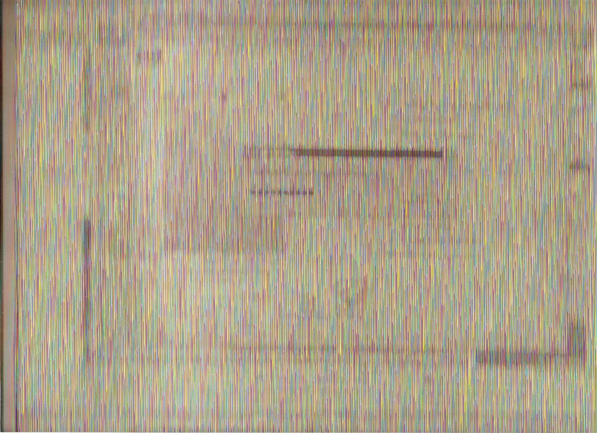
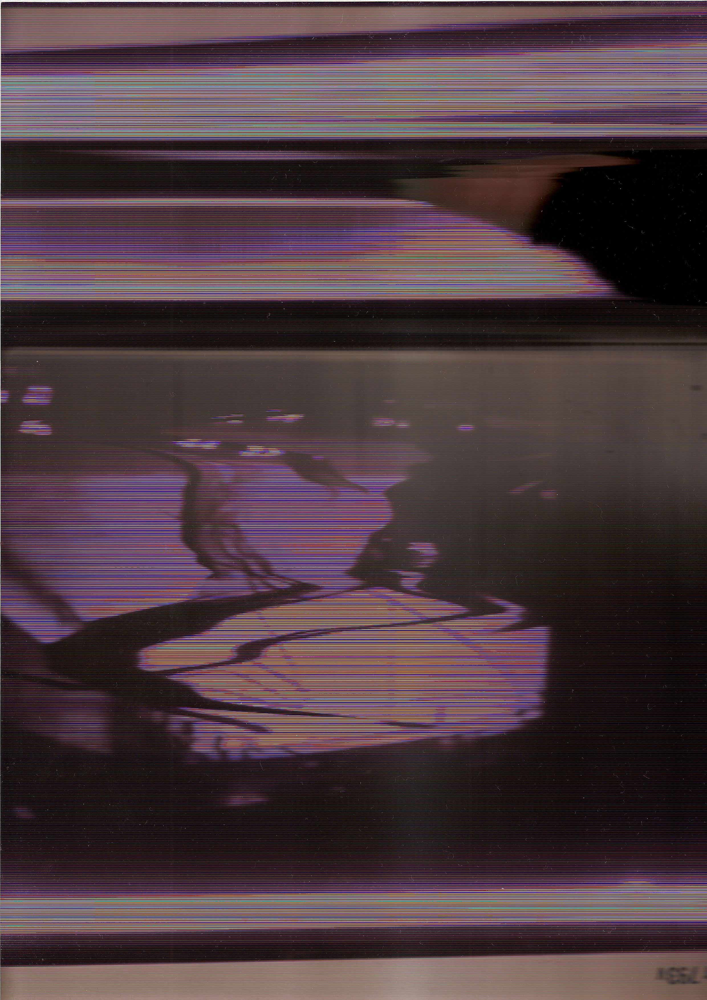
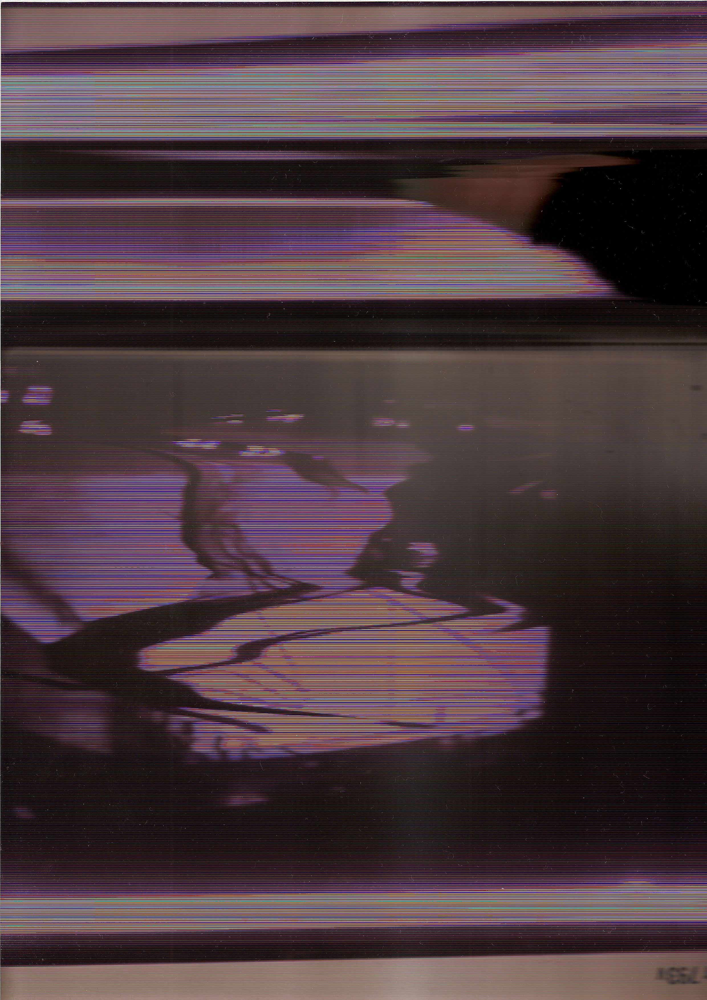
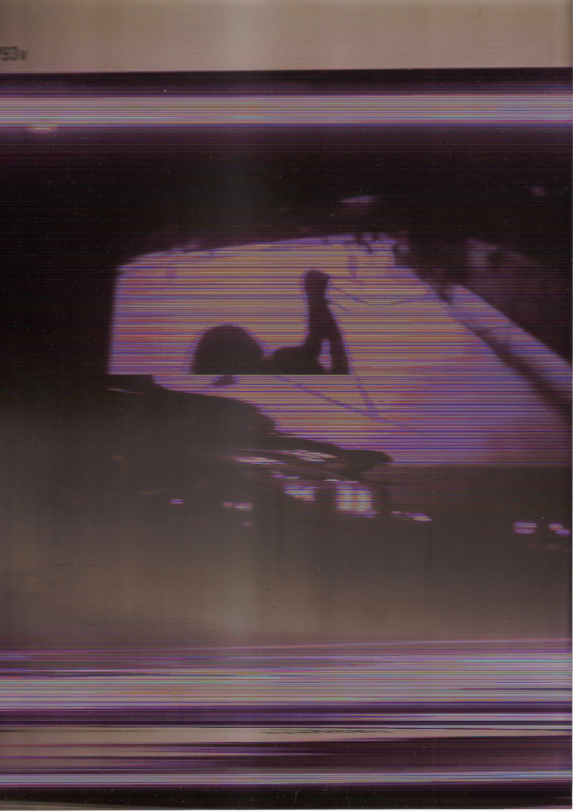
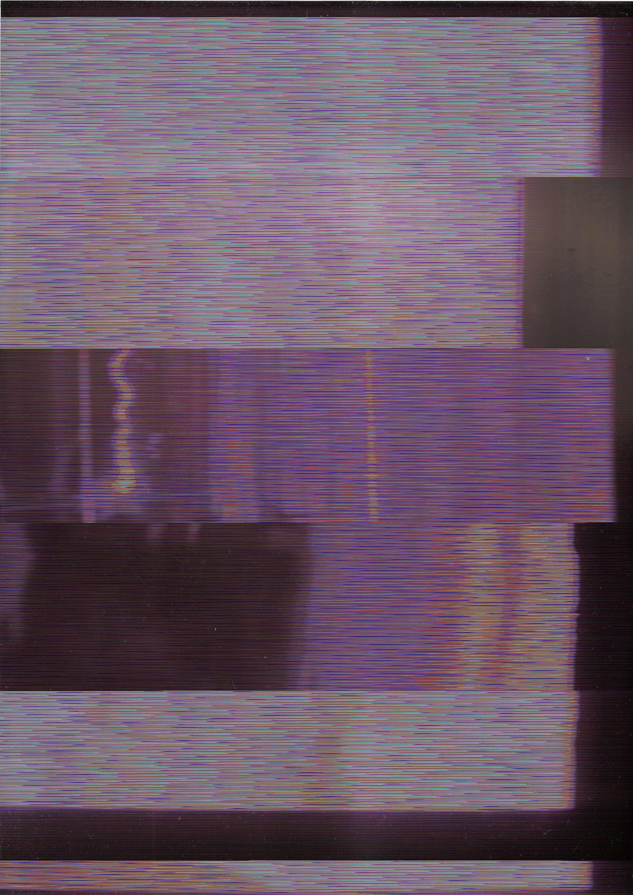
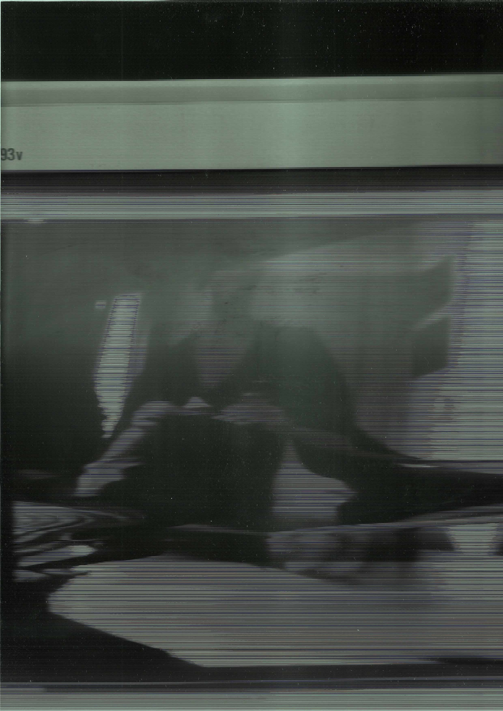
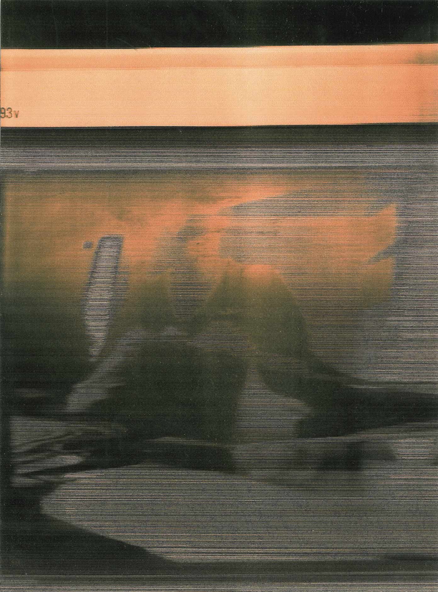
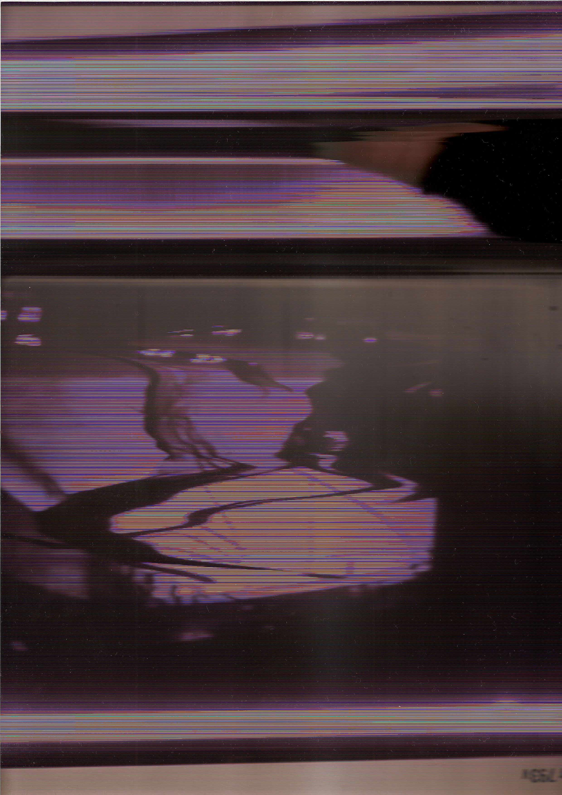

 
  
 
Experimental project inspired in the idea of feedback,
by placing the scanner lens in front of the computer screen,
first at the user interface of the software that visualizes
what is being scanned, then while a video is shown on the screen.
In this website, it's shown with the inspiration of the
Slow-scan television (SSTV) ,
to reenact how the scanner reads and writes an image.
As the name says, this technology works in the way of a television, but with a much slower transmission.
With SSTV, still today, Radio amateurs sometimes send and receive images using radio signals.
The image is encoded into sound (in a voice frequency), and when received,
the signal is decoded line by line as in a text, to reveal the image.
Because this signal can be audible, the image can then be listened,
and it can generate a sound file if you record it.
The choice of using slow scan is because of many reasons.
A contra-futuristic approach of time, not a self contemplating time,
but a screen-time, stretched to the point of non-sense.
The idea of the image having a sound also was a curiosity.
The piece is an invitation to take this time to stop a bit,
in an effort of patience and conscience of the passive action of waiting for this image to reveal itself,
as downloading images happened many years ago.
To contemplate and at the same time breathe from the
light-speed information load a person normally receive everyday.
When the image is slow to load, I realize the time is passing,
as for when the screen is frenetic as in fast scan television,
I lose track of time, is flies through my fingers.
Our senses can fool us to think that when a lot is happening
(or just moving) before our eyes, we forget everything around, including time.
To focus on something so slow, equal action, the action of scanning,
but so slow, that one can see how it generates the image, the tiling of the pixels
calls more for attention then the illusion of movement the fast scanning of images does.
This linear wiping is similar to the scanning we are more use to,
for photocopying or digitalisation of documents. While not the same,
the idea of writing the image as a text line by line, is very machinic but also very human.
If you look to a person wiping the floor, or even writing or reading a text,
you can see a similar linear pattern.
From the experiment previously started of using the scanner to digitise a computer screen,
I here translate it to the SSTV so the image can tell the story of how it was generated,
re-enacting itself in a different language, not perfectly appropriate and because of it,
going through a series of translations and reformatting, so it can be seen in a website as a part of it.
*update: in the process of translating the image, noise came into evidence,
and testing with the manipulation it in the image while distorting the sound generated
from it was inevitable, adding then a new approach to it.
 What is SSTV?
[5UP7]. (July 28, 2008). Classic Slow Scan Television (SSTV) Demonstration [Video Archive]. Youtube. https://www.youtube.com/watch?v=u3k6Xt30Z7g
[Slow Scan TV] (April 13, 2022). 124005 Flowering Potted Plants SSTV PD120 [Video Archive]. Youtube. https://www.youtube.com/watch?v=swJzm4r2j48
Kevin Loughin. [Kevin Loughin] (February 8, 2019). Ham Radio - SSTV Slow Scan Television, an overview. [Video Archive]. Youtube. https://www.youtube.com/embed/I7Vy63sfdjk